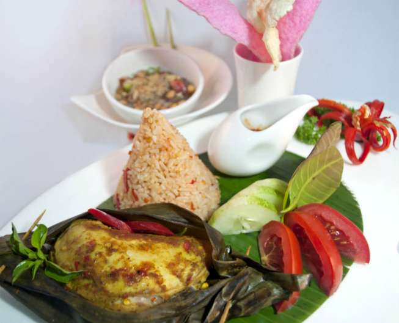
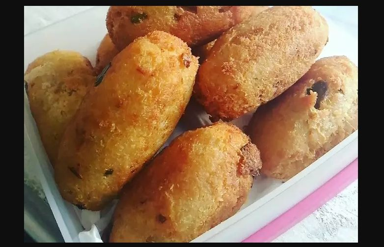
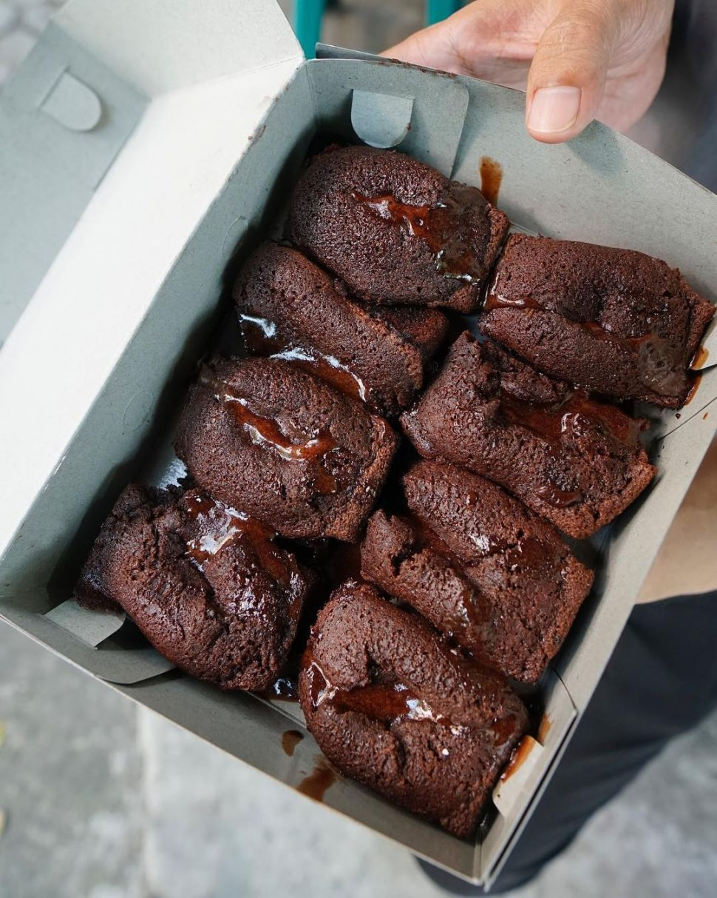
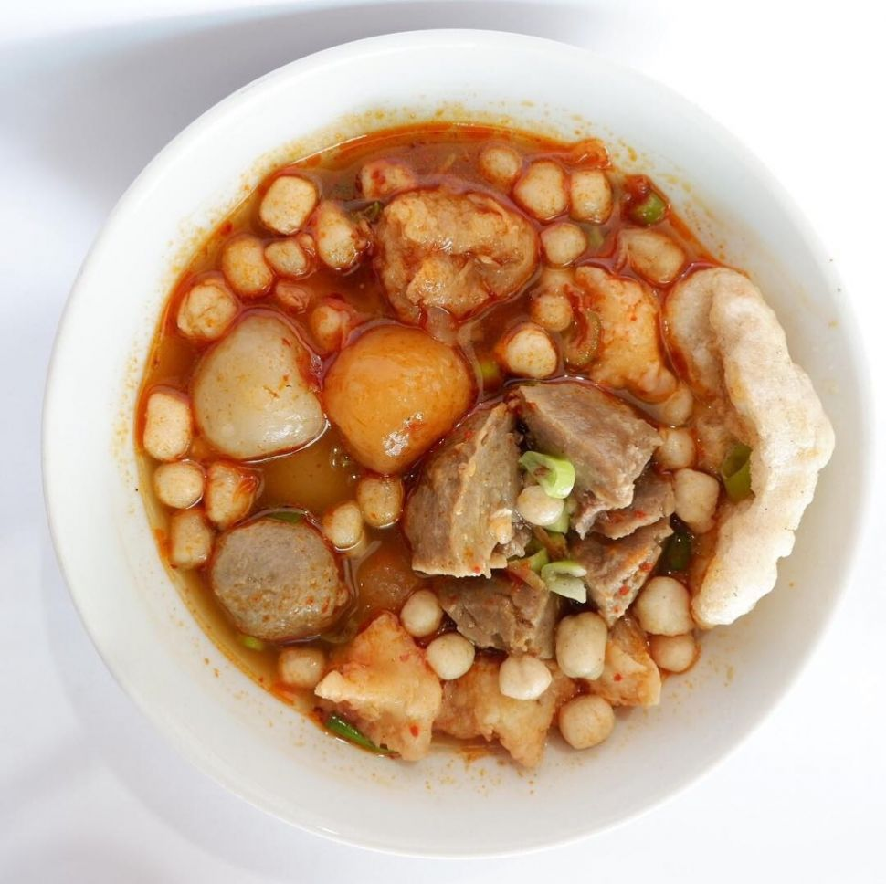

Karedok merupakan makanan yang menyehatkan karena bahan utamanya terdiri dari sayur-sayuran.
Sepiring karedok terdiri dari kacang panjang,daun kol,tauge,kacang tanah,ketimun, daun kemangi.
Tutug Oncom

Dalam bahasa Sunda, tutug artinya tumbuk/aduk.
Bahan dasar makanan khas ini adalah nasi dan tentunya oncom.
Oncom digeprek menggunakan bumby khas seperti kencur dan cabe rawit.
Tutug oncom biasa disantap bersama lauk lain seperti tahu,tempe,dan lalapan segar.
Combro

Camilan tradisional dari Jawa Barat ini terbuat dari parutan singkong yang diisi dengan oncom.
Bentuknya bulat memanjang dengan rasa pedasnya yang nendang.
Combro/comro atau oncom dijero ini memang banyak disukai karena rasanya yang gurih dan pedas.
Kue Balok

Kue Balok merupakan salah satu makanan khas Jawa Barat dengan cita rasa manis dan lezat.
Sesuai namanya, kue balok memiliki bentuk persegi panjang. Isi dari kue balok padat dan rasanya bervariasi.
Diolah dari adonan tepung terigu yang dicampur dengan bahan lainnya.
Adonan kue balok dimasak dalam cetakan mirip seperti cetakan bandros.
Cocok jadi teman menikmati secangkir kopi atau teh panas.
Baso Aci

Bakso aci atau lebih dikenal dengan baso aci adalah salah satu jajanan paling favorit dan sangat mudah ditemui.
Sebenarnya baso aci tidak sepenuhnya bakso karena tidak ada campuran daging seperti halnya bakso.
Cita rasa kuahnya gurih dan asam.Bahan-bahan kuah baso aci terdiri dari air, bumbu, rempah, garam, kaldu, ebi,
daun jeruk, dan perasan jeruk nipis yang diracik sempurna menjadi kuah yang segar mengguyur tenggorokan.